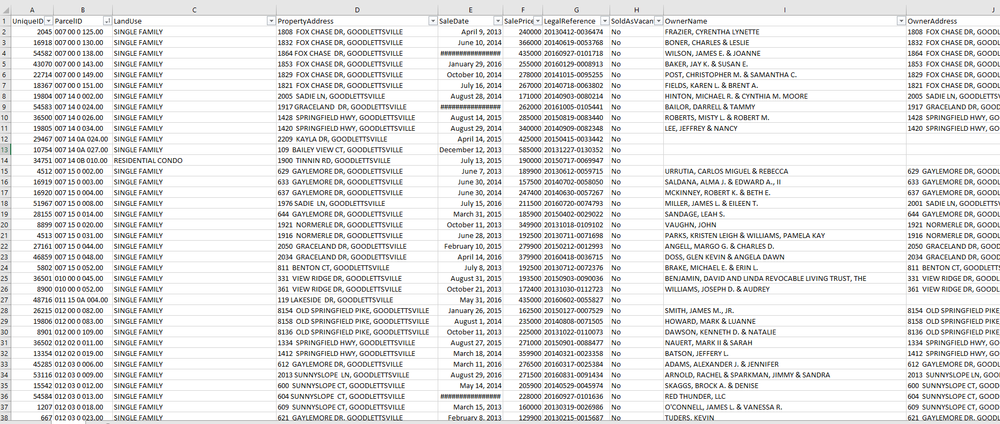
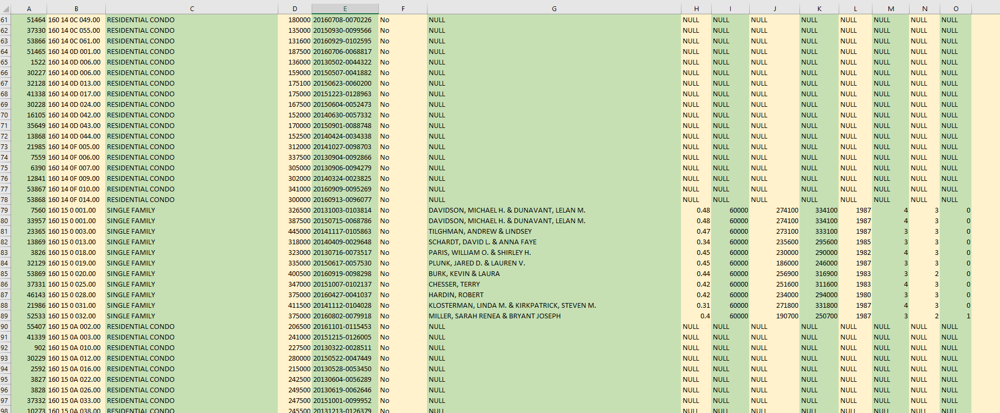
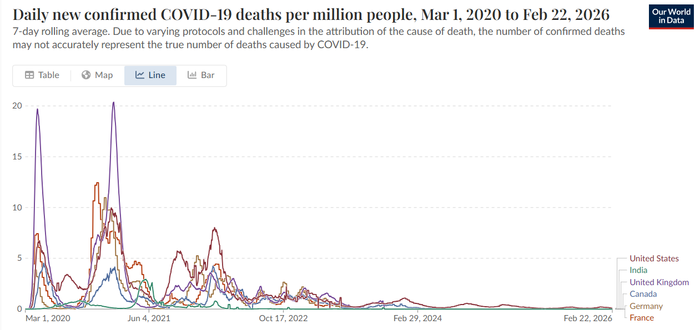
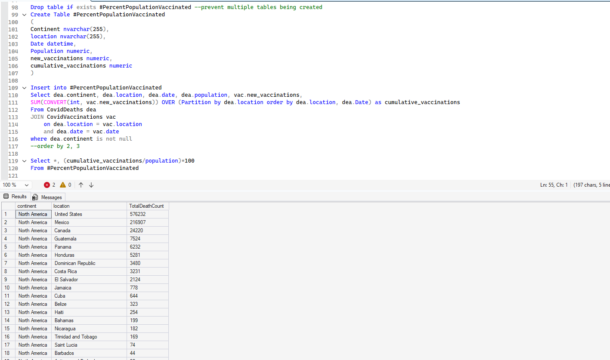
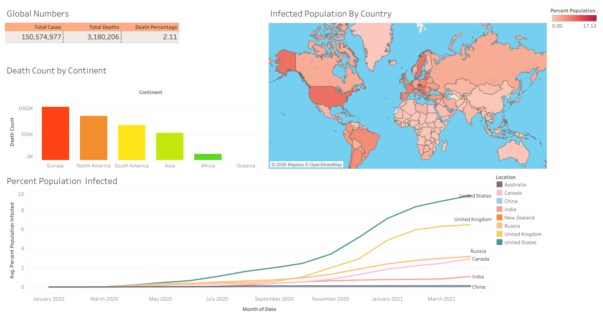
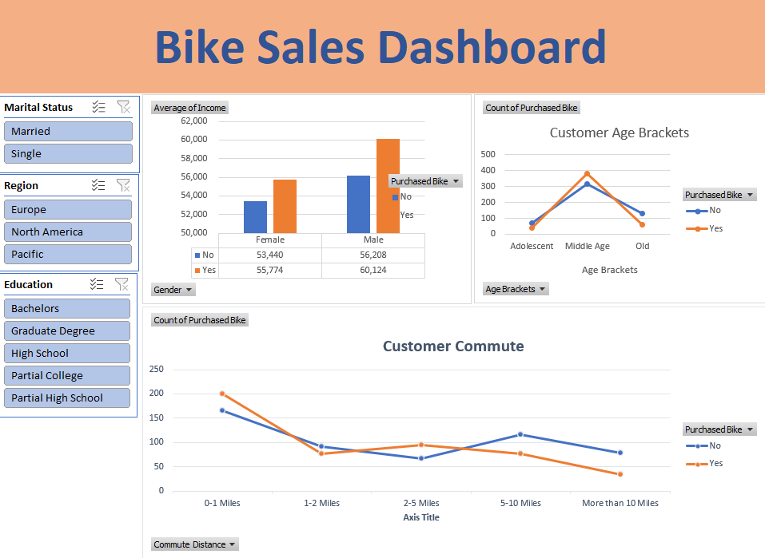

Projects
Here you'll find a selection of projects I've completed to develop and demonstrate my skills in data analysis, SQL querying, and business intelligence. Each project reflects my approach to data work: start with a real-world question, explore the data methodically, and communicate findings in a way that's clear and useful. These projects span public health data, housing data, sales analytics, and interactive dashboarding — showcasing my ability to work across the full analytics workflow, from data cleaning and exploration all the way to visual insight.
List of Projects
| Project Name | Description | Tools Used |
|---|---|---|
| Data Cleaning in SQL | Transformed raw, inconsistent housing data into a clean, analysis-ready dataset. | SQL, MS Excel |
| SQL Data Exploration and Analysis | Exploring global pandemic trends using real-world death and vaccination data | SQL, MS Excel |
| Interactive Global Visualization | Transformed SQL query outputs into an interactive global visualization | Tableau |
| Sales Analytics Dashboard | An interactive sales dashboard built with slicers and pivot tables. | MS Excel |
Nashville Housing Data Cleaning in SQL
Real-world data is rarely clean — and this project was built around that reality. Using a raw Nashville housing dataset, I wrote a series of SQL queries to systematically identify and resolve data quality issues, transforming a messy spreadsheet into a structured, reliable dataset ready for analysis or reporting.
The cleaning process covered six key areas:
- Data Standardization — converted inconsistent datetime values into a clean, uniform date format by adding a new standardized column using ALTER TABLE and CONVERT()
- Populating missing address data — identified records with null property addresses and filled them in by matching on shared Parcel IDs using a self-join and ISNULL(), ensuring no property was left without a location
- Splitting address fields — broke combined address strings into separate, usable columns for street address and city (for property addresses) and address, city, and state (for owner addresses), using both SUBSTRING/CHARINDEX and the more efficient PARSENAME function
- Standardizing categorical values — identified inconsistent entries in the SoldAsVacant field where some records used "Y/N" and others used "Yes/No," and unified them using a CASE statement
- Removing duplicate records — used a CTE with ROW_NUMBER() and PARTITION BY across key fields to flag and delete duplicate rows while preserving the original unique entries
- Dropping unused columns — removed redundant and legacy columns such as the original address field and tax district after the data had been restructured


The project includes both the raw dataset and the fully cleaned output, demonstrating the before-and-after impact of the work.
Tools Used: Microsoft SQL Server, T-SQL, Microsoft Excel
Skills Demonstrated: Data cleaning, data transformation, string manipulation, self-joins, CTEs, deduplication, schema modification, data quality management
COVID-19 Data Exploration in SQL
This project involved writing and executing a series of SQL queries against a real COVID-19 dataset covering deaths and vaccinations worldwide from 2020 to 2021. The goal was to answer meaningful public health questions by exploring the data from multiple angles.

Key analyses included:
- Death rate by country — calculating the probability of dying from COVID in Canada by comparing total deaths against total cases over time.
- Infection rate vs. population — measuring what percentage of each country's population contracted COVID, and ranking countries by highest infection rate.
- Continental death counts — breaking down total deaths by continent, and identifying a data integrity issue where continent-level records were misattributed.
- Vaccination rollout tracking — joining the deaths and vaccinations tables to track cumulative vaccinations per country over time using window functions.

The project also demonstrates the use of CTEs, temp tables, and SQL Views to organize and store data for downstream visualization.
Tools Used: Microsoft SQL Server, T-SQL
Skills Demonstrated: Data joins, Aggregate functions, Window functions, CTEs, Temp tables, Data cleaning, Logical problem-solving
COVID-19 Dashboard in Tableau
Following the SQL exploration, I brought the findings to life in Tableau by building an interactive dashboard that communicates the scale and spread of COVID-19 at a glance. The dashboard presents four key views:
- Global summary numbers — total cases, total deaths, and overall death percentage worldwide (150.5M cases, 3.18M deaths, 2.11% death rate).
- Death count by continent — a colour-coded bar chart showing Europe with the highest death toll, followed by North America and South America.
- Infected population by country — a world map using a gradient heat map to show infection rates per country, with darker shades indicating higher percentages (up to 17.13%).
- Percent population infected over time — a line chart tracking infection growth from January 2020 to mid-2021 across eight countries, clearly showing the United States outpacing all others by a significant margin.

The dashboard is designed to be clean, readable, and accessible to a non-technical audience — turning complex query outputs into a story anyone can understand.
Tools Used: Tableau Public
Skills Demonstrated: Data visualization, dashboard design, storytelling with data, map charts, time-series analysis
Bike Sales Dashboard in Microsoft Excel
This project involved cleaning and analyzing a bike sales dataset in Microsoft Excel and building an interactive dashboard to surface key sales trends. The goal was to make the data explorable for a non-technical business user with no need for formulas or manual filtering.
- Interactive slicers allowing users to filter the data by region, marital status, education level, and commute distance
- Pivot charts visualizing average income by gender and purchase behavior, age bracket breakdowns of buyers vs. non-buyers, and customer commute distance patterns
- A clean, organized layout designed for quick interpretation by a manager or stakeholder

This project demonstrates the kind of practical, everyday analytics work common in business settings — where Excel remains one of the most widely used tools for reporting and decision-making.
Tools Used: Microsoft Excel (Pivot Tables, Slicers, Charts)
Skills Demonstrated: Data cleaning, pivot table design, dashboard layout, interactive filtering, business reporting
Phone
(437) 849-8003Location
Toronto, ONCanada